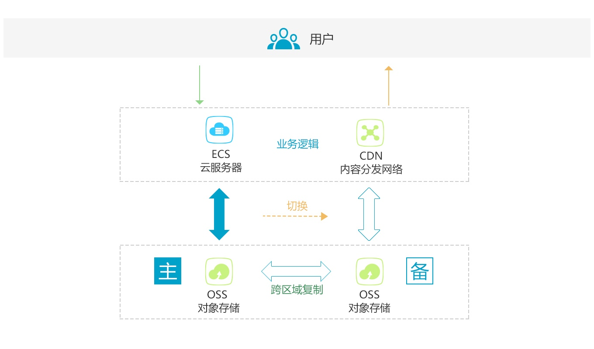

通过oss实现共享存储
需求
接入层的www门户、H5门户和APP门户都需要使用到同一份内容文件，这些文件的业务特点是：
- 不会出现并发写，如用户头像，一般情况下只会出现单个请求来修改
- 读的次数远大于写的次数。
- 读取和写入时有明确的文件名和路径，不会用取文件列表的操作和find操作。
由于该需求出现的时候，还没有NAS服务，经过研究发现可以使用阿里开源项目ossfs将oss挂载成本地目录，以实现这个需求，具体操作如下：
安装
root@iZ2590mt68kZ:~# apt-get install gdebi-core
root@iZ2590mt68kZ:~# wget https://github.com/aliyun/ossfs/releases/download/v1.79.9/ossfs_1.79.9_ubuntu14.04_amd64.deb
root@iZ2590mt68kZ:~# gdebi ossfs_1.79.9_ubuntu14.04_amd64.deb
配置
h5@iZ2590mt68kZ:~$ echo "sharedata:KradSx13tE012346:h0FgmWo775ksae8n171opZg2512345" > ~/.passwd-ossfs
h5@iZ2590mt68kZ:~$ chmod 640 ~/.passwd-ossfs
```ca
说明：
| 值 | 说明 |
| --- | --- |
| sharedata | BucketName |
| KradSx13tE012346 | Access Key ID |
| h0FgmWo775ksae8n171opZg2512345 | Access Key Secret |
### 映射本地目录
```shell
h5@iZ2590mt68kZ:~$ mkdir /home/april/sharedata
h5@iZ2590mt68kZ:~$ ossfs sharedata /home/april/sharedata -ourl=http://oss-cn-beijing-internal.aliyuncs.com
这样就Bucket名为sharedata的oss存储映射到本地/home/april/sharedata目录了。
注：ourl为你的oss所在域的域名，在控制台中可以看到，将bucketname去掉就可以了
由于我的ECS和oss是在同一个区，为了节约流量钱，我就直接用内网域名。
取消映射
h5@iZ2590mt68kZ:~$ fusermount -u /home/april/sharedata
参考链接
数据异地灾备
需求
我们将帖子的内容文件存在oss上，由于oss的特性，取指定文件非常快，但是遍历文件就会非常慢，所以在ECS上进行文件备份是一个大难题。
经过研究发现阿里云本身提供oss跨域备份的功能，可以很轻松的实现这个需求。
